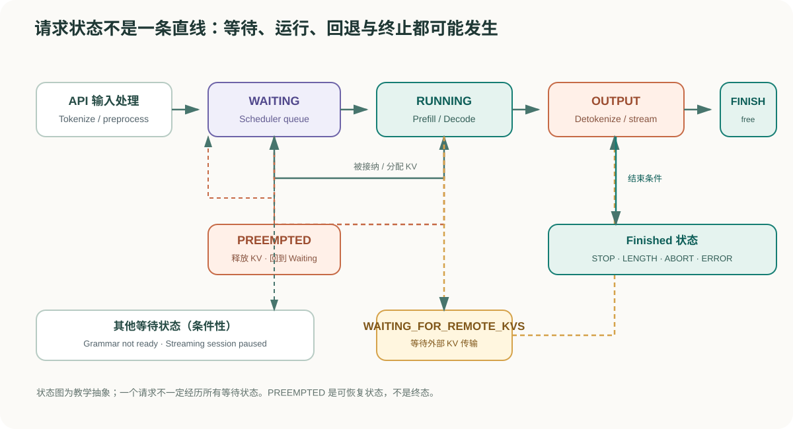

第 13 章 · 调度、批处理与运行时
Request Lifecycle：一次请求如何走完整个引擎
从客户端发送 Prompt，到第一个 token 返回，再到请求结束并释放 KV Cache，中间经过输入处理、EngineCore 队列、Scheduler、GPU 执行、OutputProcessor 和多个状态转换。
请求不是“进入模型、出来一段文本”这么简单。它可能在等待队列里停留，可能命中 Prefix Cache，可能等远端 KV 数据传输，可能因为显存不足被抢占，也可能在异步调度中带着尚未返回的输出占位继续向前。理解请求生命周期，才能定位为什么一个请求迟迟没有首 token、为什么生成中途暂停，以及什么时候显存才真正释放。
读完这一章，你应该能够
- 沿着 API Server → EngineCore → Scheduler → Worker → OutputProcessor 追踪一次请求。
- 理解
num_computed_tokens、num_in_flight_tokens和输出占位符的作用。 - 区分 WAITING、RUNNING、PREEMPTED 和 FINISHED 状态。
- 解释远端 KV 等待、抢占恢复、客户端 Abort 等非直线路径。
- 判断请求结束与 KV Cache 释放之间的关系，并设计基本排障路径。

13.1 一条请求经过哪些阶段
先看主路径。不同 API、模型任务和并行配置会带来细节差异，但一个典型 V1 生成请求可以按以下顺序理解：
- Ingress：API Server 接收请求，完成输入校验、Tokenization 和必要的多模态预处理。
- Admission：前端把请求转换成 EngineCore 可处理的数据结构，通过 IPC 送入 Engine Core。
- Queue：Scheduler 注册 Request，并把它放进相应 Waiting 队列。
- Schedule：Scheduler 根据 token budget、请求数、Prefix Cache 和 KV Cache 容量决定本轮是否接纳。
- Execute：EngineCore 把 SchedulerOutput 交给 Executor，GPU Worker 执行模型。
- Update：Scheduler 根据 ModelRunnerOutput 更新请求进度、生成 token 和状态。
- Output：OutputProcessor 反解码 token、执行 stop 检查、构造 RequestOutput，并通过流式队列或 API 返回客户端。
- Finish：请求达到停止条件或被中止后，状态进入 Finished，并清理不再需要的缓存和请求状态。
13.2 入队与请求状态
Engine Core 收到 ADD 类型请求后，会调用 Scheduler 的 add_request()。对于一个新请求，Scheduler 会建立内部 Request 对象、登记请求 ID，并把它加入等待队列。若请求使用 KV Connector 或可恢复输入流，还会初始化对应的连接器或会话状态。
V1 的 RequestStatus 包含多个状态。它们不是每个请求都必经的线性步骤，而是用来表达请求在等待、执行、暂停或结束时所处的不同条件：
| 状态 | 含义 | 是否终态 |
|---|---|---|
WAITING | 普通等待调度接纳 | 否 |
WAITING_FOR_STRUCTURED_OUTPUT_GRAMMAR | 等待结构化输出 Grammar 准备就绪 | 否 |
WAITING_FOR_REMOTE_KVS | 等待远端 KV Cache 加载或传输完成 | 否 |
WAITING_FOR_STREAMING_REQ | 可恢复输入流会话暂时等待下一段输入 | 否 |
RUNNING | 已经被接纳，处于运行队列 | 否 |
PREEMPTED | 曾经运行，但因资源压力被抢占并放回等待队列 | |
FINISHED_STOPPED | 命中 stop 条件并结束 | 是 |
FINISHED_LENGTH_CAPPED | 达到长度限制 | 是 |
FINISHED_ABORTED / FINISHED_ERROR | 用户中止或执行错误 | 是 |
源码中还有 FINISHED_IGNORED、FINISHED_REPETITION 等结束状态。它们说明“请求结束”也有不同原因，不能只用一个布尔值来解释所有退出路径。
关键判断：当前 V1 的 RequestStatus.is_finished() 通过状态枚举顺序判断，只有排在 PREEMPTED 之后的状态才被视为 finished。抢占请求会重新进入等待队列，后续仍可能继续计算。
13.3 Prefill、Decode 与进度计数
理解请求状态还不够。Scheduler 需要知道请求已经计算到哪里、有哪些输出尚未返回，以及本轮是否只处理了一个 Prefill chunk。
| 字段 | 作用 | 读者可以怎样理解 |
|---|---|---|
num_computed_tokens | 当前请求已经推进的 token 位置 | 模型状态已经覆盖到哪里 |
num_in_flight_tokens | 已经安排执行、但对应输出还未完全处理的 token 数 | 正在路上的工作量 |
num_output_placeholders | 异步调度中为尚未返回的输出预留的位置 | 下一轮可以先按预期输出规划 |
is_prefill_chunk | 标记当前请求是否仍在 Prefill 分块过程中 | Prompt 是否还没有全部推进 |
num_preemptions | 记录请求被抢占的次数 | 该请求经历过多少次资源回退 |
对于普通请求，Scheduler 在安排一轮工作后，会先乐观地推进 num_computed_tokens，因为下一轮调度需要知道当前计划已经覆盖到的位置；真实输出返回后，如果 Speculative Decoding 拒绝了某些草稿 token，进度还可能被回滚修正。
这也是为什么请求状态不能只用“Prompt 完成 / 正在生成”两个标签描述。一个请求可能还在分块 Prefill，可能已经进入 Decode，也可能在异步执行中有若干 token 尚未回到 EngineCore。
13.4 等待、抢占与恢复分支
交互观察：请求状态的四条路径
正常运行：WAITING → RUNNING → Prefill / Decode → 生成 token → 达到 stop 或长度条件 → FINISHED。完成后由 Scheduler 清理请求状态和不再需要的 KV blocks。
远端 KV 等待：当请求需要从其他实例或外部存储加载 KV 时，可以进入 WAITING_FOR_REMOTE_KVS。此时不一定执行模型 forward；等传输完成、状态更新后，Scheduler 才继续安排计算。
抢占与恢复：RUNNING → PREEMPTED → Waiting Queue。抢占会释放请求持有的 KV blocks 并重置计算进度；重新接纳时，Prefix Cache 或 KV Connector 可能恢复部分进度，否则需要重新 Prefill。
Abort / Error：客户端断开或主动取消时，API Server 可以向 EngineCore 发送 ABORT。EngineCore 通知 Scheduler 结束请求、从队列移除并释放资源；执行过程中发生的错误也会沿输出路径返回前端。
远端 KV 等待和抢占有一个共同点：请求并不一定在当前 step 执行模型。EngineCore 的 busy loop 会继续处理 Scheduler 工作；当没有模型执行、但仍有连接器任务或延迟释放需要推进时，EngineCore 还会短暂让出 GIL，让后台传输线程取得运行机会。
13.5 输出、结束与资源释放
GPU Worker 返回的通常是 token IDs、logprobs、pooling output 和其他执行元数据，而不是已经完成的 HTTP 文本响应。前端的 OutputProcessor 会把 EngineCoreOutputs 转换为客户端可消费的 RequestOutput：
- 根据请求 ID 找到前端保存的 RequestState。
- 更新 TTFT、生成 token 数、缓存命中等统计信息。
- 把 token IDs 交给 Detokenizer，检查 stop strings 和停止条件。
- 构造新的 RequestOutput，并放入异步请求队列或返回同步调用者。
- 如果请求已经结束，清理前端 RequestState；Scheduler 侧也会释放请求持有的 KV blocks 和其他缓存引用。
请求结束的原因可能是 stop token、stop string、最大输出长度、客户端 Abort、输入超限或内部错误。结束原因会映射到不同的 finish reason，便于 API 响应、日志和监控区分。
请求完成与物理显存瞬间归还并不总是同一时刻。正常路径会释放请求持有的 KV blocks；但 KV Connector 的异步传输、延迟释放、流水线执行和并发引用可能让部分资源清理延后。排查显存时要结合实际 KV Cache 使用率和执行器状态，而不是只看客户端是否收到 finish chunk。
13.6 如何从日志与指标追踪一条请求
排查一个请求时，可以按“请求在哪一层停住”逐层缩小范围：
- 客户端没有拿到响应：先检查 API Server、请求校验、Tokenization、排队上限和输入预处理。
- 长时间没有首 token：观察 waiting 数、Prefill backlog、Prefix Cache 命中、TTFT 和调度预算。
- 生成中途停顿：观察 ITL、KV Cache 使用率、抢占增量、GPU Worker 是否正在执行，以及是否有远端 KV 加载。
- 请求反复等待：检查是否因 KV Cache 不足被抢占，是否因优先级或队列顺序长期得不到接纳。
- 结束后资源仍然偏高：检查是否有其他请求共享缓存块、Prefix Cache 驻留、异步 KV Connector 传输或延迟释放。
建议把请求级时间线与服务级指标关联起来：请求到达时间、进入 EngineCore 时间、首次调度时间、首次输出时间、结束时间，以及同一时间窗口内的 Running / Waiting、KV Cache usage、Preemption 和 GPU 利用率。这样才能区分“请求本身慢”与“服务整体排队”。
本章自检
- 为什么 API Server 和 OutputProcessor 不应该与 GPU Worker 混为一谈？
num_computed_tokens和num_in_flight_tokens分别表达什么？- 为什么 PREEMPTED 不是终态？请求重新接纳时可能复用哪些已有工作？
- WAITING_FOR_REMOTE_KVS 和 WAITING_FOR_STREAMING_REQ 分别在等待什么？
- 为什么客户端已经收到结束响应，并不意味着所有缓存相关内存都在同一瞬间变成空闲？
第四批到这里完成：从 Scheduler 的单轮决策、Chunked Prefill 的预算切分，到 V1 多进程拓扑和单请求生命周期，形成了一条从控制平面到执行平面的完整知识链。下一批将进入 Sampling、生产部署和可靠性体系。
参考资料与源码入口
- vLLM, Architecture Overview：V1 进程架构、EngineCore 和 Scheduler 的职责。
- 源码：Request / RequestStatus、Scheduler、EngineCore。
- 源码：OutputProcessor：Detokenization、RequestOutput、Streaming Queue 与请求清理。
- 测试：Scheduler tests：请求状态、调度、抢占与 KV Cache 行为的测试入口。
源码审校基线：vLLM commit c2fb5c5aba0a904fdbecb8e01b7c41db5bfaeadf。RequestStatus 和内部 Request 字段属于实现细节，可能随 vLLM 版本演进；阅读线上部署时应以实际版本源码为准。